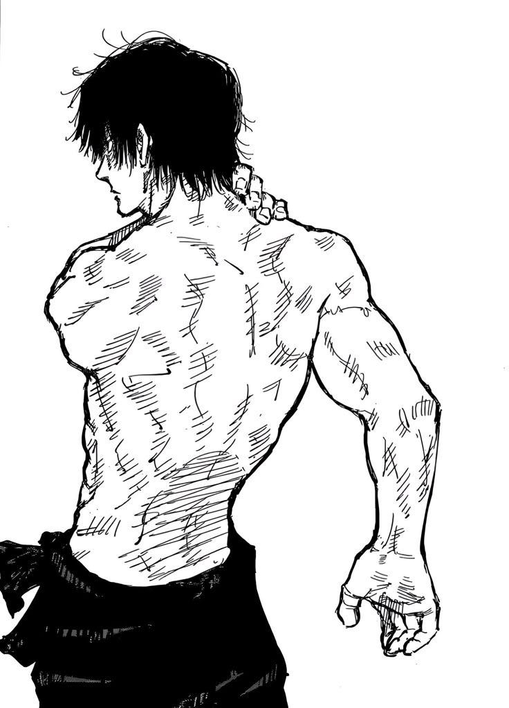

Boxing forms a core part of Toji's arsenal due to its emphasis on precision, footwork, and rapid punching combinations, complementing his razor-sharp reflexes and combat intelligence. As a fighter who relies on outmaneuvering opponents with speed rather than sorcery, Toji uses boxing's jab-cross-hook sequences to set up devastating follow-ups. This quote evokes his calculated aggression, like a master boxer weaving through defenses to land pinpoint, fight-ending blows.
